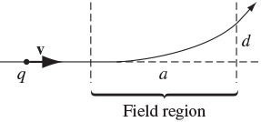
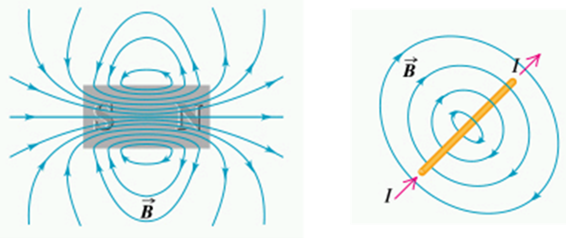
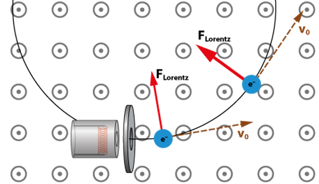

4 Magnetic Fields and the Lorentz Force Law
Recommended reading: Griffiths Section 5.1
4.1 Pre-lecture problem
(Griffiths, Problem 5.1)
This problem should help you revise some magnetism concepts from your A-level course.
A particle of charge \(q\) enters a region of uniform magnetic field \(\mathrm{\mathbf{B}}\) (pointing into the page). The field deflects the particle a distance \(d\) above the original line of flight, as shown in the diagram below.

Is the charge positive or negative?
In terms of \(a\), \(d\), \(B\), and \(q\), find the momentum of the particle.
4.2 Magnetic Fields
In electrostatics, we discussed electric charges as interacting via the electric field. An electric field surrounds a charge, and when a second charge is brought near to the first it interacts with the field, experiencing a force. The electric field diverges from charges - all charges are either a source or a sink for the electric field.
However, the magnetic field does not work in the same way. We cannot think of “magnetic charges” interacting via the magnetic field, because magnetic charges have not been found to exist - there is no evidence for single North or South poles. Searches have been made for magnetic monopoles, but without any success, although their existence has not been entirely ruled out. (This is beyond our syllabus but if you are interested you could try looking at this paper.)
Magnetic fields, denoted by \(\mathrm{\mathbf{B}}\), are vector fields that are produced by moving electric charges, for example electric currents. The direction of the magnetic field at a given point in space is the direction in which the north end of a compass needle would point when placed at that point.
There are some important differences between the behaviour of charges in electric and magnetic fields. In electric fields, the force on a charge is parallel to the field lines – a positive charge moves along the field lines in the direction indicated. In magnetic fields, the force on a moving charge is perpendicular to the field lines.
As with the electric field, the magnetic field can be represented using field lines and the density of field lines represents the strength of the field. The direction of the magnetic field at a given point in space is defined as the direction in which a compass needle would point if placed at this point. In other words, it is the direction in which the North pole of a magnetic would move (i.e. away from another North pole). The direction of the magnetic field due to an electric current is given by the right-hand rule. If you point the thumb of your right hand in the direction of the current and then curl the fingers the field is in the direction of the curl of your fingers.
In the same way as the electric field, the strength (or in other words, the magnitude) of the magnetic field is usually indicated by the density of the field lines. Magnetic field strength is measured in the SI unit of Tesla (T) or in Gauss, where 1 Tesla = \(10^4\) Gauss.

Magnetic field lines always form closed loops whereas electric field lines begin and end on charges. As magnetic field lines are closed loops, all field lines entering a closed surface must leave it as well - therefore the net magnetic flux through any surface is zero.
4.2.1 The Lorentz Force Law
As we have seen in the previous lectures on electrostatics, electric charges exert forces on one another as a result of the electric fields that arise from them. In the same way, a magnetic field exerts a force on a moving charge, because the moving charge produce its own magnetic field and the two fields interact, producing a force.
The magnetic force on a moving charge is given by
\[ \mathrm{\mathbf{F}}_B = q(\mathrm{\mathbf{v}}\times \mathrm{\mathbf{B}}) {#eq-lorentz} \]
The term \(\mathrm{\mathbf{v}}\times \mathrm{\mathbf{B}}\) represents the cross product of the velocity and magnetic field vectors. As you will know, the cross product of two vectors results in a vector that is perpendicular to both. Therefore, the direction of \(\mathrm{\mathbf{F}}\) is perpendicular to both \(\mathrm{\mathbf{v}}\) and \(\mathrm{\mathbf{B}}\). You will also know that the cross product of two vectors \(\mathrm{\mathbf{a}}\) and \(\mathrm{\mathbf{b}}\) is equal to \(ab \sin\theta\). Hence, the magnitude of the magnetic force is given by:
\[ F_B = qvB \sin\theta \]
This is not the full picture, however. The Lorentz Force Law describes the total force on a moving charge, including the effect of both electric and magnetic fields. The force \(\mathrm{\mathbf{F}}\) experienced by a charge \(q\) moving with a velocity \(\mathrm{\mathbf{v}}\) in an electric field \(\mathrm{\mathbf{E}}\) and a magnetic field \(\mathrm{\mathbf{B}}\) is given by:
\[ \mathrm{\mathbf{F}}= q(\mathrm{\mathbf{E}}+ \mathrm{\mathbf{v}}\times \mathrm{\mathbf{B}}) \]
The Lorentz force law is responsible for the circular motion of charged particles in magnetic fields, as represented in the figure below:

The centripetal force required for circular motion is supplied by the magnetic force. This principle is used in cyclotrons and other particle accelerators.
The Lorentz force law also leads to the Hall effect, which is the development of a transverse electric field in a solid material when it carries an electric current and is placed in a magnetic field that is perpendicular to the current.
4.3 Magnetic field of currents
As we mentioned earlier, currents are moving charges and therefore they also experience a force in the prescence of a magnetic field. We can use the Lorentz force law to work out what this force will be. Here we consider a current as a moving line charge with velocity \(\mathrm{\mathbf{v}}\) and linear charge density \(\lambda\). The current in the wire is given by \(I = \lambda \mathrm{\mathbf{v}}\) - you should be able to see upon inspection that this makes sense dimensionally, but check out Griffiths 5.1.3 for a more detailed derivation. If we think of the current as being made up of infinitesimal charges \(\mathrm{d} q\), integrating to sum all of these across the length of the wire would give the total charge in the wire. Hence, by analogy to Equation eq-lorentz, the force on the wire would be
\[ \mathrm{\mathbf{F}}_{mag} = \int (\mathrm{\mathbf{v}}\times \mathrm{\mathbf{B}}) \mathrm{d} q \tag{4.1}\]
We can express \(\mathrm{d}q\) as \(\lambda \mathrm{d} l\), hence the magnetic force becomes
\[ \ begin{split} \mathrm{\mathbf{F}}_{mag} &= \int (\mathrm{\mathbf{v}}\times \mathrm{\mathbf{B}}) \lambda \mathrm{d} l \\ &= \int (\mathrm{\mathbf{I}}\times \mathrm{\mathbf{B}}) \mathrm{d} l \end{split} \tag{4.2}\]
\(\mathrm{\mathbf{I}}\) and \(\mathrm{d} \mathrm{\mathbf{l}}\) point in the same direction, therefore it is valid to express Equation eq-currentforce2 as
\[ \mathrm{\mathbf{F}}_{mag} &= \int I (\mathrm{d} \mathrm{\mathbf{l}}\times \mathrm{\mathbf{B}}) \tag{4.3}\]
Equation eq-currentforce3 is the generally accepted way to express the magnetic force on a segment of current-carrying wire, and will be used in this form in this course. However, Equation eq-currentforce3 models a current-carrying wire as a 1-dimensional line charge, which of course in reality it is not. If we want to be more realistic and calculate the magnetic force on a volume current (so, considering the current in a 3-dimensional wire) the magnetic force is
\[ \mathrm{\mathbf{F}}_{mag} &= \int (\mathrm{\mathbf{v}}\times \mathrm{\mathbf{B}}) \rho \mathrm{d}\tau = \int (\J \times \mathrm{\mathbf{B}}) \mathrm{d}\tau \tag{4.4}\]
where \(\mathrm{d}\tau\) is the volume element, \(\rho\) is the volume charge density and \(\J = \rho \mathrm{\mathbf{v}}\) is the volume current density. The volume current density is defined as the current per unit area for the area perpendicular to the current flow (essentially the cross-sectional area of the wire). Once again, Griffiths 5.1.3 is worth reading if you want a more detailed derivation.
4.4 Problems
- In the lecture we sketched and calculated the trajectory of the particle in Griffiths Example 5.2, in the case where the particle was released from the origin at zero velocity (see the lecture slides on Blackboard if you were not in attendance).
Find and sketch the trajectory of the particle in Example 5.2, if it starts at the origin with velocity: (a) \((E/B) \hat{\mathrm{\mathbf{y}}}\) (b) \((E/2B) \hat{\mathrm{\mathbf{y}}}\) (c) \((E/B) (\hat{\mathrm{\mathbf{y}}} + \hat{\mathrm{\mathbf{z}}}\))
- (Griffiths Problem 5.3)
In 1897, J. J. Thomson “discovered” the electron by measuring the charge-to-mass ratio of “cathode rays” (actually, streams of electrons, with charge \(q\) and mass \(m\)) as follows:
First he passed the beam through uniform crossed electric and magnetic fields \(\mathrm{\mathbf{E}}\) and \(\mathrm{\mathbf{B}}\) (mutually perpendicular, and both of them perpendicular to the beam), and adjusted the electric field until he got zero deflection. What was the speed of the particles in terms of \(E\) and \(B\) when he reached zero deflection?
Then he turned off the electric field, and measured the radius of curvature, \(R\), of the beam, as deflected by the magnetic field alone. In terms of \(E\), \(B\), and \(R\), what is the charge-to-mass ratio (\(q/m\)) of the particles?
- A problem related to force on current-carrying wires?